Rozważania

Stacja I
Jezus skazany na śmierć
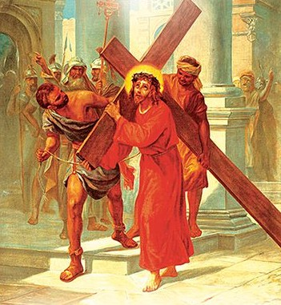
Stacja II
Jezus bierze krzyż na swoje ramiona
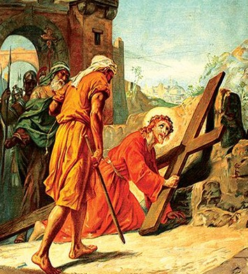
Stacja III
Jezus upada po raz pierwszy
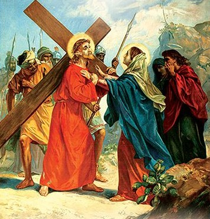
Stacja IV
Jezus spotyka swoją Matkę
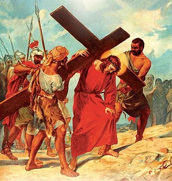
Stacja V
Szymon z Cyreny pomaga Jezusowi nieść krzyż
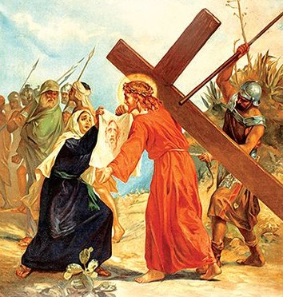
Stacja VI
Weronika ociera twarz Jezusowi
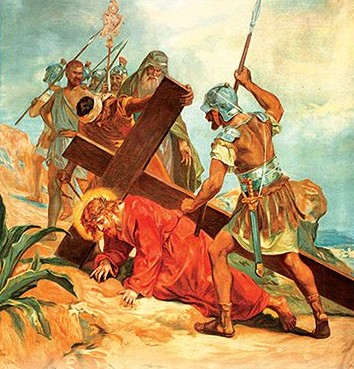
Stacja VII
Jezus upada po raz drugi
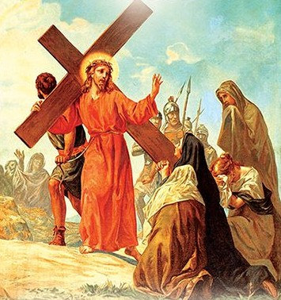
Stacja VIII
Jezus pociesza płaczące niewiasty
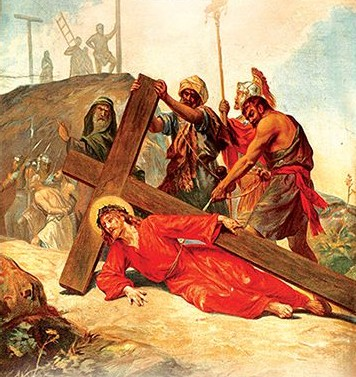
Stacja IX
Jezus upada po raz trzeci
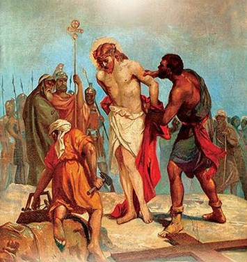
Stacja X
Jezus obnażony z szat
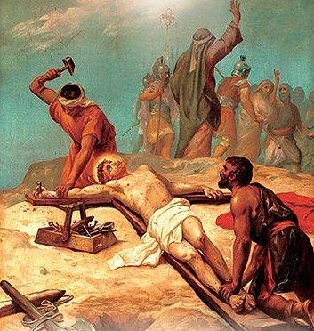
Stacja XI
Jezus przybity do krzyża
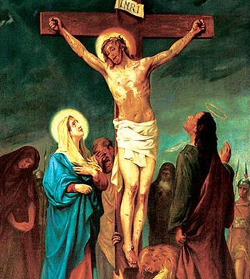
Stacja XII
Jezus umiera na krzyżu
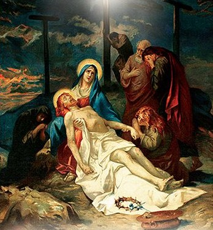
Stacja XIII
Jezus zdjęty z krzyża
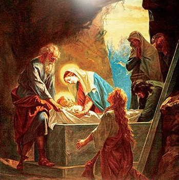